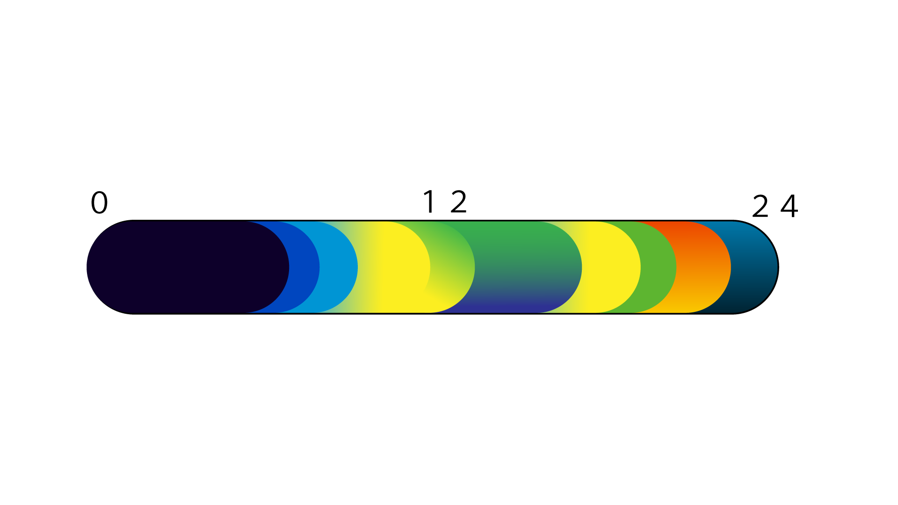
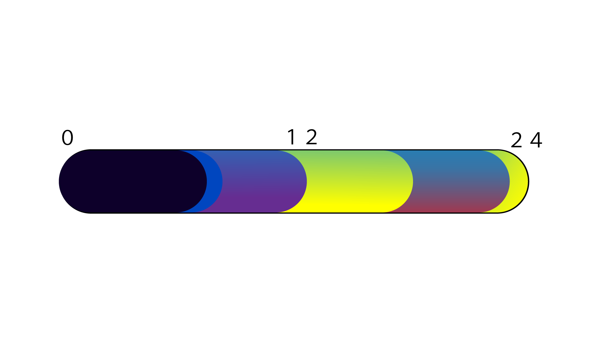
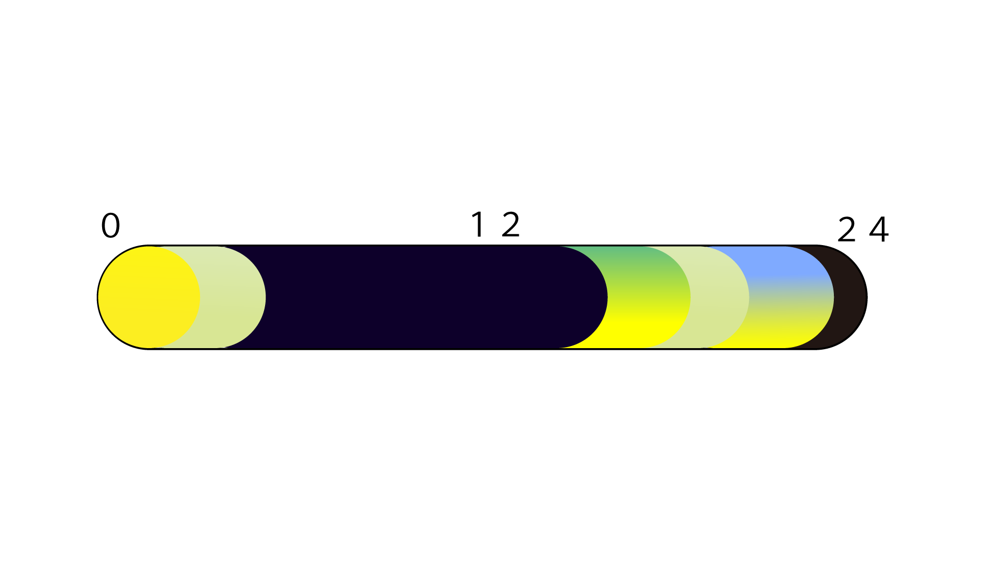
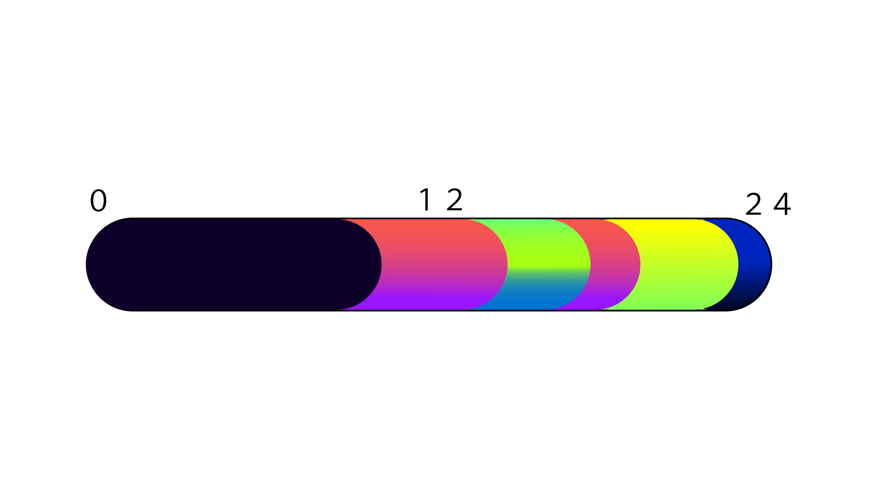
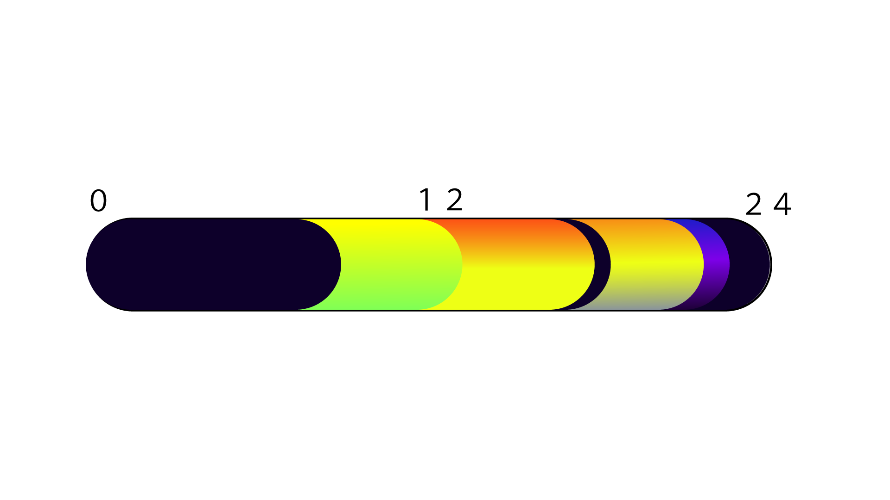

ギャラリー
一日の感情

6月19日（金）の出来事
1限からあるので気分がすぐれない。
4限が休講になったことで課題に取り組む時間がとれたことで上機嫌になった。

6月20日（土）の出来事
バイトが夜から入っているが朝から雨が降っているため不安になる。
なんとか止んでほしいと祈ったが叶わず且つ大雨だったため終始不機嫌だった。
終わりが近づくとだんだん元気になる。

6月21日（日）の出来事
バイト終わりのご飯や風呂は一番幸せを感じた。
昼過ぎまで寝ていることもしばしば。
日曜日が終わることに虚無感を覚えるまま一日が終わる。

6月22日（月）の出来事
朝から外に出るのを躊躇うほどとても暑かった。
通学中の電車内は多くの人で混雑しており、息苦しさを感じた。

6月24日（水）の出来事
授業がない日なので気分が良かった。
昼から課題に取り組んだり少しの睡眠を取ることができた。
翌日は1限から授業がある木曜日だった為、少し気が重いまま眠りについた。